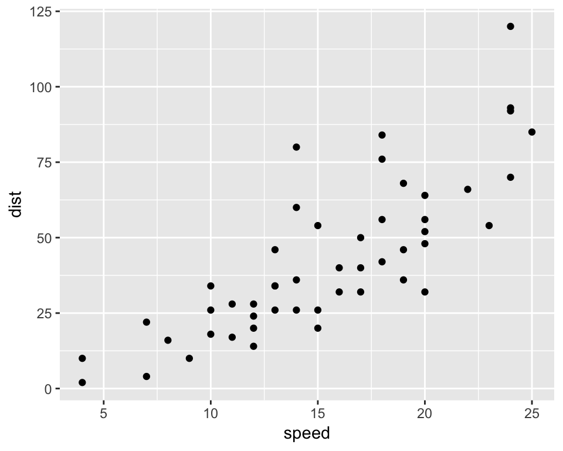

A minimal Project Tree in R
Introduction
The last two days arrived at my twitter feed some discussions on how bad are the following sentences at the beginning of your R script/notebook, sparked by @JennyBryan’s slides at the IASC-ARS/NZSA Conference:
setwd()
and
rm(list = ls())
The only two things that make @JennyBryan 😤😠🤯. Instead use projects + here::here() #rstats pic.twitter.com/GwxnHePL4n
— Hadley Wickham (@hadleywickham) December 11, 2017
Blog post elaborating on my advice to avoid setwd() and rm(list = ls()) at top of an #rstats script.
— Jenny Bryan (@JennyBryan) December 12, 2017
Wow that really touched a nerve 😮https://t.co/YDvVUQOMKx https://t.co/b4SpNhBYUX
How to ensure @JennyBryan doesn't 🔥 your 💻, or: "Project-oriented workflow" (from the arsonist herself) https://t.co/pGYpIN52GS #rstats pic.twitter.com/4llIzL8Wm6
— Mara Averick (@dataandme) December 12, 2017
Jenny Bryan offered a detailed explanation for this, as well as some fixes, in her tidyverse blog post. The main idea was:
- To ensure reproducibility within a stable working directory tree. She proposes the very concise
here::here()but other methods are available such as thetemplateor theProjectTemplatepackages..
- To avoid break havoc in other’s computers with
rm(list = ls())!.
All of this buzz around project self-containment and reproducibility motivated me to finish a minimal directory tree that (with some variations) I have been using for this year’s data analysis endeavours.
It is a extremely simple tree which separates a /data, a /plot and an /img directory inside the main folder (root)
- The data folder contains both raw data and processed data files saved by R.
- The plot folder contains all the plots saved during the workflow.
- The img folder has every other image (logos, etc) that R takes as an input to build the results.
- Inside the root folder I store the main
.Ror.Rmdscripts.
This ensures that every folder has an unidirectional relationship with the root folder (except the data dir in this case). But the important thing is that the paths in the scripts are set relative to the root folder, so the entire tree can be copied elsewhere and still work as expected.
I also added some more features to the tree:
- An
.Rprojfile.
- Parametrize the
.Rmdfile.
- A Git repository so the tree can be conveniently cloned or downloaded, with a .gitignore file:
Here is a sketch of how it works:

And here is the actual code of the notebook/script. I have not included regular markdown text outside the R chunks, as this template is intended to be changed and filled with new text each time:
Script code
# Installs missing libraries on render!
list.of.packages <- c("rmarkdown", "dplyr", "ggplot2", "Rcpp", "knitr", "Hmisc", "readxl")
new.packages <- list.of.packages[!(list.of.packages %in% installed.packages()[,"Package"])]
if(length(new.packages)) install.packages(new.packages, repos='https://cran.rstudio.com/')library(dplyr)
library(knitr)
library(ggplot2)Working directories
# directory where the notebook is
wdir <- getwd()
# directory where data are imported from & saved to
datadir <- file.path(wdir, "data") # better than datadir <- paste(wdir, "/data", sep="")
# directory where external images are imported from
imgdir <- file.path(wdir, "img")
# directory where plots are saved to
plotdir <- file.path(wdir, "plot")
# the folder immediately above root
Up <- paste("\\", basename(wdir), sep="")
wdirUp <- gsub(Up, "", wdir) Data import
# Data name (stored as a parameter in the Rmarkdown notebook)
params <- NULL
params$dataname <- "cars"# MSEXCEL
dataname <- params$dataname # archive name
routexl <- paste(datadir, "/", dataname, ".xlsx", sep="") # complete route to archive
library(readxl)
mydata <- read_excel(routexl, sheet = 1) # imports first sheet# CSV / TSV (separated by tabs in this example)
dataname <- params$dataname # archive name
routecsv <- paste(datadir, "/", dataname, ".csv", sep="") # complete route to archive
mydata <- read.csv(paste(routecsv, sep=""),
header = TRUE,
sep = "\t",
dec = ".")Data operations
# Hmisc::describe(mydata)
head(mydata)
speed dist
1 4 2
2 4 10
3 7 4
4 7 22
5 8 16
6 9 10p1 <- ggplot(mydata, aes(x=speed, y=dist)) + geom_point()
p1
Save plots
# TO PDF
plotname1 <- "p1.pdf"
# TO PNG
plotname2 <- "p1.png"
routeplot1 <- file.path(plotdir, plotname1)
routeplot2 <- file.path(plotdir, plotname2)
ggsave(routeplot1) # (see http://ggplot2.tidyverse.org/reference/ggsave.html)
ggsave(routeplot2) Save data
# RDATA
save(mydata, file="data/mydata.RData")# MSEXCEL # not run
dataname2 <- "mydata" # name we will give to file
routexl2 <- paste(datadir, "/", dataname2, ".xlsx", sep="") # complete route to future archive
library(xlsx)
write.xlsx(mydata, routexl2) # creates archive in specified route# CSV / TSV (separated by tabs in this example)
dataname2 <- "mydata" # name we will give to file
routecsv2 <- paste(datadir, "/", dataname2, ".csv", sep="") # complete route to future archive
write.table(mydata, file = routecsv2, append = FALSE, quote = FALSE, sep = "\t ",
eol = "\n", na = "NA", dec = ".", row.names = FALSE,
col.names = TRUE)This script -and the dir tree that contains it- is saving me a lot of time and headaches (where I’ve put that data?….), I hope it can be also useful for people out there!.
Why I did this?
I wanted to show a very basic directory tree (tree stump?) so it could be modified by people with no experience organising code. I am teaching R to some students (asynchronously) and need them to really understand how important it is to be tidy with R projects.
They have no idea of coding so I have to give them tools that:
- don’t scare them,
- they can use right away with their data,
- make them… “learn R as you go” 😀
Future improvements
- Add a Makefile?
- Use Travis.ci?
- Etc…